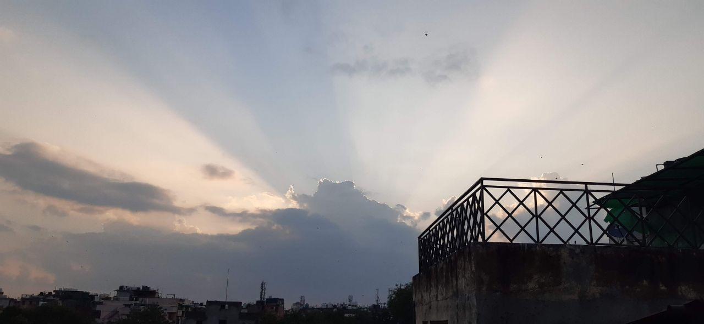
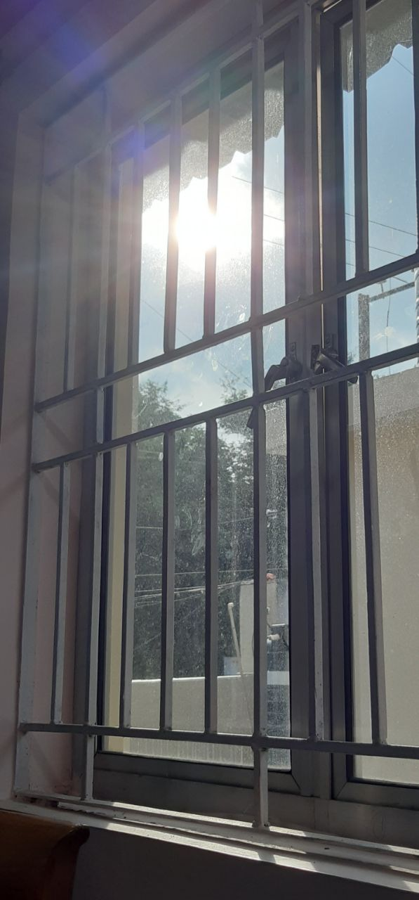
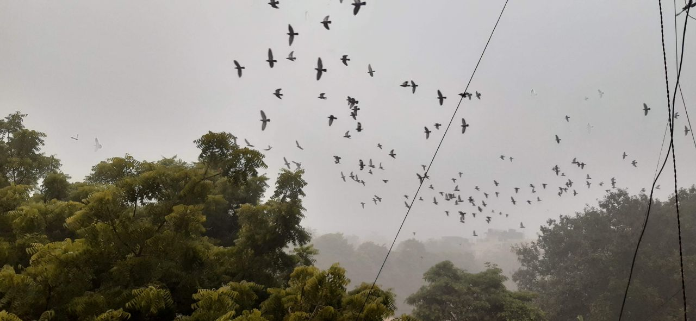

Note #2
11/09/2021
. . .
CAUGHT IN BETWEEN
We are so focused on mirroring the society’s image of us, we often forget the person sitting deep down inside, probably with all their barriers up. It took me, a pandemic…. Sorry… It took me a pandemic striking a second time to realise that you’ve only got so much time; And living by our already conceived covers and cases, is only going to result in a fall and break some day.
Yes the first pandemic taught me none of the self help and other stuff people were talking about. I was enjoying being lazy. Eating and cooking food. Watching whatever stuff YouTube projected at me and catching up on all the supposedly cool series’ online platforms had to offer. Staying inside. Well that was easy for me. Never been much of a social person…. Wait… “never explored that side of me much, settling for calling myself antisocial”…. Now this sounds more like the truth (P.S. the truth I have only very recently discovered). I loved going to sleep after seeing the sunrise because wow that was cool. Getting up post lunch… huh.. normal.. just a little headache easily fixed with more sleep you see. A cycle, I so vehemently caught on, that breakfast became part of an old dictionary.
What I did not realise in slipping into this pattern was, that the happiness I was deriving in being alone, was just because there was no one questioning me, making it easier for me to hide. Hiding from, under the table sexist comments you are supposed to ignore. Hiding from the comparisons of skin colour and food items. Hiding from tips to look fairer and have better and longer hair. Hiding from the awkward conversations about where my career was headed. Hiding from keeping up the image of a responsible and caring person always. Well to be honest it was just hiding from anyone who had a question for me. More like running away.
This hiding away bliss lasted till lockdown decided -“it’s been too much work let’s rest a little, unlock get to work”. And lord, the questions hit hard!!!
“I thought people were losing weight through fitness challenges in the lockdown. Oh, looks like someone took extra liberty with themselves this lockdown. Staying indoors isn't good for your skin is it? You did get an online fellowship in the past months, didn’t you?”
And what did I do, if you may ask.. well nothing. Exactly… I did nothing different. I smiled awkwardly, laughed at some and changed the topic. Had to keep up with the ‘lovely person’ image of mine.
And slowly and steadily like a lullaby before a sleep… everything just pushed me inside…closing me off. Shutting myself was the only mechanism I had known since childhood. “To not show what you are, is to not get hurt…”, I used to think. If you still believe this, kindly reconsider. It is a temporary fix only.
Amidst dealing with all this, news of the second wave being much more deadly spread like wildfire. Knowing now that a second lockdown was inevitable, panic struck. Everything came back to me like a blur. A blot in time. And I finally started questioning the panic, the scare. If all the hiding was comfortable, why was I scared now?
I mustered courage and spoke. Speaking my problems out loud made me see all I was doing wrong by myself. How, not speaking out for myself and my opinions, was actually just making me give away the steers of my life.
I did not want to repeat the cycle of hiding and running away anymore. I wanted to be able to speak for myself and be proud of it. I did not want to wall myself up anymore. Above all, I wanted to make every moment count from then on. You live only once, and living it by preconceived ideas and structures was not something I wanted anymore. And well, hiding is good, if only you are in the game of hide and seek, in life I’d rather seek.
So what the pandemic made me understand was “you are your own hero”. You fall on your own and you pick yourself up. No one can have the power to create disbalance in your life unless you allow them to.
. . .
- LIMITLESS